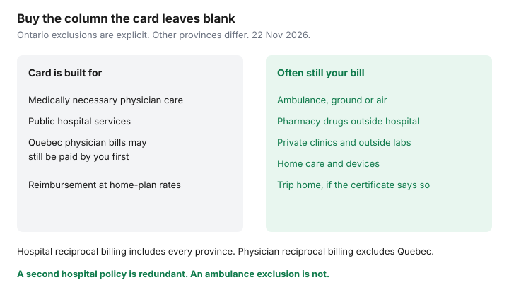

Insurance · Canada
Out-of-Province Medical Insurance Inside Canada: Gaps Your Health Card Does Not Fill
A health card travels further than the household budget does. Medically necessary physician and public-hospital care is portable across Canada in a way a U.S. emergency room is not. Ambulance services, prescriptions filled at a pharmacy, and private clinics often are not. People skip a policy for a domestic trip because “we have medicare,” then meet a ground-ambulance invoice or a drug bill the home plan will not reimburse. This page is the within-Canada method: what reciprocity actually pays, which bills remain, who already has employer cover, and how to buy a top-up for the gap instead of a second copy of the hospital benefit. Trips outside Canada belong on the provincial plans abroad guide. This one stops at the border.
Disclosure: Education only. Travel medical policies are an offer type for the gaps a health card leaves. Saving Optimizer may earn a commission if partner links are added later. We do not currently claim a travel-insurer partnership, and we do not rank products. Rules below were read on 22 Nov 2026 from the Ontario, Alberta, British Columbia, Québec, and Health Canada pages cited. Your card and your certificate control.
Key takeaways
- Hospital reciprocal billing includes every province and territory. Physician reciprocal billing includes every province and territory except Québec. A card is not a promise that the clinic will bill your home plan directly.
- Ontario’s page is explicit: out-of-province ambulance, pharmacy drugs, home care, and private-facility fees are not OHIP services. Other provinces leave similar holes. Read yours.
- Leaving Ontario for good, OHIP’s out-of-province cover runs until the last day of the second full month after you leave. British Columbia’s wait is the rest of the arrival month plus two months. Alberta coverage from another province starts on the first day of the third month. Those clocks do not match a weekend trip.
- An employer travel-medical booklet may already cover a domestic trip, with a day cap and a stability clause. Read it before you buy a second policy for the same hospital bill.
- Assuris health-expense protection on a travel policy from a member insurer is the greater of $250,000 or 90 percent if that insurer fails. It does not pay an ambulance your certificate excluded.
Interprovincial physician/hospital reciprocity vs what still bills you
The Canada Health Act requires provincial and territorial plans to cover medically necessary hospital and physician services for their residents, including when those residents are temporarily in another province. How the bill moves is a set of agreements, not a single national card network.
Health Canada’s Canada Health Act Annual Report for 2024–2025 states that all provinces and territories participate in hospital reciprocal billing, and all except Québec participate in physician reciprocal billing. In the participating physician agreements, the host province bills the home province and the patient usually pays nothing at a public service when the card is accepted. Québec stands apart for physician services. The same report says physician services received by Québec residents outside Québec are not reimbursed at the host province’s rates. A Québec resident can be asked to pay the physician and then claim from the Régie de l’assurance maladie du Québec, which may reimburse at Québec rates rather than the full invoice. RAMQ also tells Québec physicians that they may bill a visiting patient directly, or bill the patient’s home province and accept that province’s tariff. “I showed my card” is not, by itself, proof the visit was billed reciprocally.
| Service | What reciprocity is built to do | What still surprises households |
|---|---|---|
| Public hospital, medically necessary | All provinces and territories participate in hospital reciprocal billing. | Some high-cost or excluded hospital items are outside the agreement. A private room upgrade is not an insured service because the bed is in a hospital. |
| Physician, medically necessary | Reciprocal physician billing applies outside Québec. The host can still choose to bill you. | Ontario reimburses a paid physician bill at Ontario rates, and only if you claim within 12 months. The difference between the invoice and the Ontario rate can remain yours. Québec reimbursement is at Québec rates. |
| Not an insured service at home | Portability does not create a new benefit. | Cosmetic care, most dental care, and most care outside a physician or public hospital were never on the card. |
Carry the card, and check that it is valid before you go. Ontario’s out-of-province page, updated 2 May 2024 and read again 22 Nov 2026, says a valid card has not expired, shows the correct personal information, and matches the address on file with ServiceOntario. If you will be outside Ontario more than 7 months in a 12-month period, the same page says to call ServiceOntario before you leave. That clock is about keeping OHIP, not about buying a travel policy. Snowbird residency rules for time outside Canada are on the snowbird guide. A winter in another province can raise the same “are you still a resident?” question with your home ministry.
Ambulance, prescriptions, and private clinics often excluded
Ontario lists the gaps in one place. OHIP coverage outside Ontario does not include ambulance services (transport and paramedic), prescription drugs and other drugs given outside a hospital, home care, fees charged by private hospitals or facilities, diagnostic or laboratory services outside a public hospital, long-term care, or assistive devices. The ministry’s own recommendation on that page is to buy private health insurance before leaving Ontario for uninsured services. That sentence is the product decision. It is not a suggestion to duplicate the public-hospital benefit you already have.

Ambulance fees are set by the service that transported you, not by a national schedule this page can quote. Inside Ontario, a medically essential ambulance trip that starts outside a hospital has a $45 co-payment when the health card is valid, and a $240 charge when the trip is not considered medically essential or the card is not valid. That co-payment is an Ontario rule for Ontario ambulances. It does not cap a bill in another province. If OHIP does not cover out-of-province ambulance at all, the entire host invoice is the exposure a domestic travel-medical certificate is for, if the certificate includes ground ambulance. Read the ambulance section. Some certificates pay ground ambulance only to the nearest hospital. Some exclude it. Air evacuation is a different, larger benefit and is often the reason a domestic policy is worth more than the ambulance line alone, especially in the North.
A prescription filled at a pharmacy in another province is a common cash bill. Drugs administered inside a public hospital as part of an insured stay are a different category from a bottle you pick up on the way to the airport. Your workplace drug plan may pay either, with its own pharmacy rules. A provincial drug program usually will not follow you to a pharmacy outside the province. Private clinics and imaging outside a public hospital are the other frequent invoice: the card was never going to pay a non-participating facility just because you were on holiday.
Students, remote workers, and snowbirds-within-Canada use cases
Three domestic patterns create long enough stays that a weekend assumption fails.
- Full-time students. Ontario keeps OHIP for full-time study in another province if you bring proof that you lived in Ontario at least five months in the twelve months before leaving, plus proof of full-time enrolment. You still need the other province’s rules if you are studying in Ontario on another card. A student plan at the school is often an extended-health plan for drugs and dental, not a replacement for the provincial card. Confirm which card is in force before a reading week trip becomes a term away.
- Mobile workers. Ontario’s page says OHIP can continue if you travel in Canada for work more than 212 days in a twelve-month period, Ontario remains your primary home, and you bring an employer letter and proof of residence to ServiceOntario. “Remote” from a laptop in another province is not automatically that status. Call the ministry if the stay will pass the seven-month mark. Employer travel medical, if any, still has a trip-length cap. A six-month assignment can outrun a 30-day or 60-day travel benefit even when OHIP itself continues.
- Snowbirds inside Canada. A winter in Victoria or Halifax is not a winter in Arizona. Provincial hospital and physician portability is much broader than out-of-country caps. The gaps that remain are the ambulance, drug, and private-clinic list, plus the risk of being outside the home province long enough to need permission to keep the card. Do not buy an international snowbird policy’s U.S. hospital limit for a Canadian city unless you are actually leaving the country. Do buy, or confirm you already have, cover for the uninsured services if a fall would mean an ambulance and a prescription far from home.
When employer travel medical already covers domestic trips
Many group benefit booklets include travel medical for trips outside the province of residence, not only outside Canada. The booklet is the only way to know. Look for four fields before you pay for a retail policy:
- The territory. “Outside Canada” is not “outside your province.” A domestic trip needs the domestic sentence.
- The day cap. Fifteen, thirty, sixty, and ninety days are all sold. A cap of thirty days does not cover day 31. Extensions, if they exist, have a deadline before the original period ends.
- Who is covered. A spouse and children on the health plan are not automatically on the travel benefit. Students away at school may age out.
- Stability. A change in medication or a new symptom before departure can void the pre-existing portion. The credit-card certificate guide uses the same four tests for a card benefit. A card that pays only when the trip is charged to the card, or only outside Canada, does not fill a domestic ambulance bill.
If the group benefit already pays emergency hospital care and ambulance for the length of this trip, a second policy that repeats those promises is redundant. It can also create two insurers arguing about who is first. If the group benefit is silent on ambulance, or the trip is longer than the cap, price a top-up for the missing piece. Ask the retail insurer whether it coordinates with a group plan. Get the answer in the certificate, not in a call-centre summary.
Buy top-up only for the real gaps—avoid redundant policies
Write the exposure in two columns before you buy. Column A is what the home plan and any employer or card benefit already pay for this itinerary. Column B is what they refuse. Buy for column B.
| Exposure | Often already covered | Often the reason to buy |
|---|---|---|
| Emergency public hospital and physician | Yes, if the card is valid and the service is medically necessary, subject to the Québec physician exception and to any bill the doctor asks you to pay up front. | The difference between a billed fee and the home-province rate. Trip interruption to get you home is usually not a provincial benefit. |
| Ambulance and medical evacuation | Rarely, once you leave the home province. | Ground ambulance and, where the certificate includes it, air evacuation. Read the nearest-hospital limit. |
| Pharmacy drugs and private diagnostics | No, on Ontario’s out-of-province list. Check yours. | A drug benefit with a stated maximum, and private-clinic care only if the certificate says so. |
A policy that excludes pre-existing conditions, and a trip you are taking because of an unstable condition, is not a top-up. It is a premium for a denial. Stability clauses are measured in days before departure. Count them on a calendar.
Claim clocks sit in the certificate: notice as soon as practicable, sometimes a phone number you must call before a non-emergency test. Provincial reimbursement has its own clock. Ontario’s out-of-province claims must be submitted within 12 months of the service, with the original itemized statement and proof of payment, mailed to the OHIP claims office. Keep copies. A travel insurer that wants you to claim the province first will ask for the provincial decision. Start that file while you still have the originals.
Moving provinces: bridging coverage until the new health card activates
A move is not a vacation. The old plan and the new plan use different end dates, and the gap between them is where ambulance, drugs, and private care are still uninsured even when physician services are temporarily portable.
- Leaving Ontario. OHIP covers the same out-of-province services as a temporary absence until the last day of the second full month after you leave. Apply in the new province immediately. Ontario’s own arrival rule is different: there is no OHIP waiting period. If you are eligible, coverage starts when the application is approved, and you can apply as soon as you arrive. You do not wait 153 days to apply.
- Arriving in British Columbia. MSP’s wait is the rest of the month residence is established, plus two months. Apply when you arrive. The ministry decides the date residence starts. B.C. tells new residents to arrange other insurance during the wait. The old card is what you use for insured services the old province still covers. It is not ambulance insurance.
- Arriving in Alberta from another province. Alberta Health says coverage begins on the first day of the third month after you establish residency, if you apply within three months. During the wait, use the previous card and confirm with the previous plan what it still pays. Apply late and the effective date is set when you register, which can lengthen the hole.
- Leaving Québec. RAMQ health coverage ends on the first day of the third month after you arrive in the other province. Public drug coverage ends on the departure date, not on that third-month date. A move in the middle of a prescription is a drug-plan problem on day one, even while the health card still has weeks left.
Bridge coverage, if you buy it, should be explicit about moving, not only about tourism. Some travel-medical contracts exclude people who have changed their residence or who are travelling to receive treatment. A short-term visitor plan and a waiting-period plan for new residents are different products. Ask which one you were quoted. When the new card’s start date is in writing, set the bridge to end that day so you are not paying two plans for the same physician visit. Keep paying for the benefits the new card still will not provide, which is the subject of the gap-coverage guide if you also lost a workplace plan in the move.
Sources & date stamps
- Ontario, OHIP coverage outside Ontario — physician and public-hospital services; exclusions for ambulance, out-of-hospital drugs, home care, and private facilities; 12-month reimbursement; coverage until the last day of the second full month after a permanent move. Updated 2 May 2024. Used 22 Nov 2026.
- Ontario, apply for OHIP — no waiting period; apply on arrival if eligible. Used 22 Nov 2026.
- Health Canada, Canada Health Act Annual Report 2024–2025 — hospital reciprocal billing in all provinces and territories; physician reciprocal billing in all except Québec; Québec physician services out of province are not reimbursed at host rates. Used 22 Nov 2026.
- British Columbia, MSP coverage wait period — remainder of the month residence is established, plus two months. Used 22 Nov 2026.
- Alberta, AHCIP if you move to Alberta — from another province, coverage on the first day of the third month if you apply within three months. Used 22 Nov 2026.
- RAMQ, moving outside Québec — health coverage ends the first day of the third month after arrival elsewhere in Canada; public drug coverage ends on departure. Used 22 Nov 2026.
- Assuris, how am I protected — health expense benefits, including travel insurance at a member insurer, the greater of $250,000 or 90 percent. Used 22 Nov 2026.
Frequently asked questions
Does my health card cover an ambulance in another province?
Ontario says no: ambulance transport and paramedic services outside Ontario are not OHIP benefits. Other provinces commonly exclude ambulance the same way. The bill is the host service’s rate. A travel-medical certificate covers it only when the ambulance wording says so.
Why do Québec trips get billed differently?
Health Canada’s 2024–2025 report says every province and territory joins hospital reciprocal billing, and every province except Québec joins physician reciprocal billing. Québec residents treated outside Québec are not reimbursed at the host physician’s rate. A physician in Québec may bill a visitor directly. Keep the itemized receipt and claim the home plan within its deadline.
I am moving to B.C. When does MSP start?
The wait is the rest of the month you become a resident, plus two more months. Apply as soon as you arrive. Use the old card for insured services the old province still covers, and arrange separate cover for what it does not, including ambulance and out-of-province drugs.
Do I need a policy if my employer has travel medical?
Only for the gap. Read the territory, the day cap, who is covered, and the stability clause. If the booklet already pays this domestic trip, a second hospital policy is redundant. If it stops at the border or on day 30, price the missing days and the missing benefits.
Is this insurance advice?
No. Education only. Travel medical policies are an offer type. We do not claim a partnership with any insurer. Ministry pages and the certificate control.